clear; filename="/home/shivam/Documents/sem3/cs215/matlab_scripts/assignments/assign_multivariate/data/mnist.mat"; %path of dataset data=load(filename); dst=data.digits_train; lst=data.labels_train; fdst=double(dst); % disp(size(lst)); img_as_rows=reshape(fdst,[],size(lst,1));%storing all images as vectors % disp(size(img_as_rows)); covt=zeros(784,784,10); for i=1:10 collected=img_as_rows(:,lst==i-1); su=sum(collected,2); mui=su/size(collected,2); for j=1:size(collected,2) collected(:,j)=collected(:,j)-mui; end covt(:,:,i)=collected*collected'; % disp(size(mui)); if(i==1) mu=mui; else mu=[mu,mui]; end end % disp(size(mu)); % disp(size(covt)); modevar=zeros(784,10); for i=1:10 [V,D]=eig(covt(:,:,i)); e=eig(covt(:,:,i)); [m,id]=max(e); eigenvect=V(:,id); % disp(size(eigenvect)); modevar(:,i)=eigenvect; e=sort(e,'descend'); sige=e(e>=0.01*m); x=[1:1:784]; figure(i); hold on; plot(x,e); ylabel('eigen value'); t=strcat('digit = ',num2str((i-1)),' ,no. of significant modes = ' ,num2str(size(sige,1))); title(t); hold all; img=mu(:,i)-(sqrt(m)*eigenvect); img=uint8(img); img=reshape(img,28,28); figure(10+i) subplot(1,3,1),imshow(img); img=mu(:,i); img=reshape(img,28,28); subplot(1,3,2),imshow(img); img=mu(:,i)+(sqrt(m)*eigenvect); img=uint8(img); img=reshape(img,28,28); subplot(1,3,3),imshow(img); end % disp(size(modevar));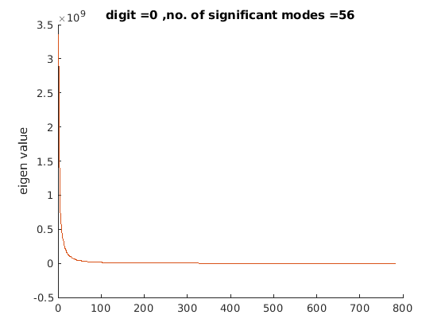 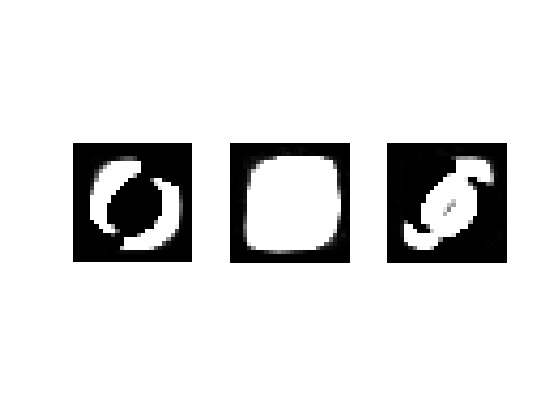 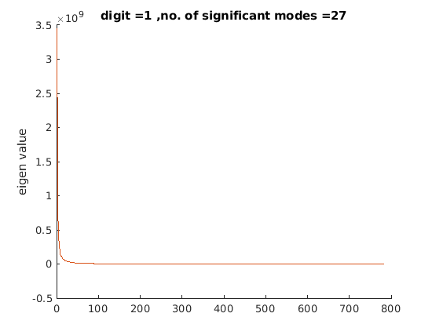 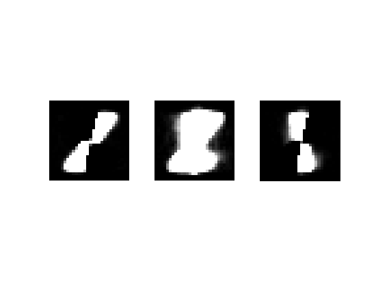 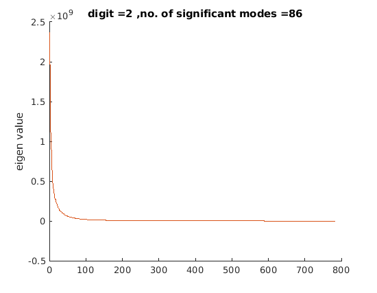 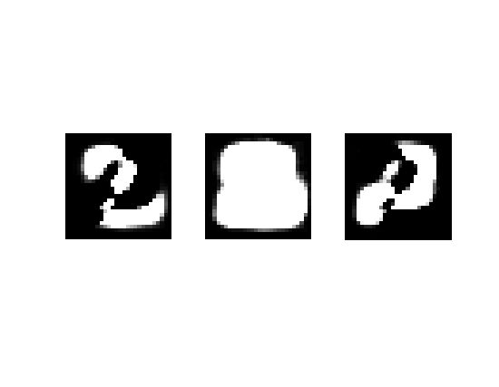 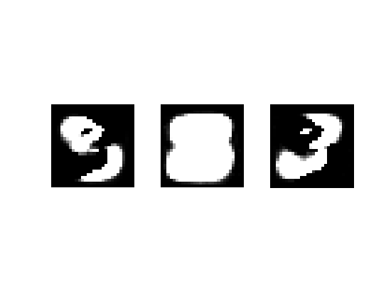 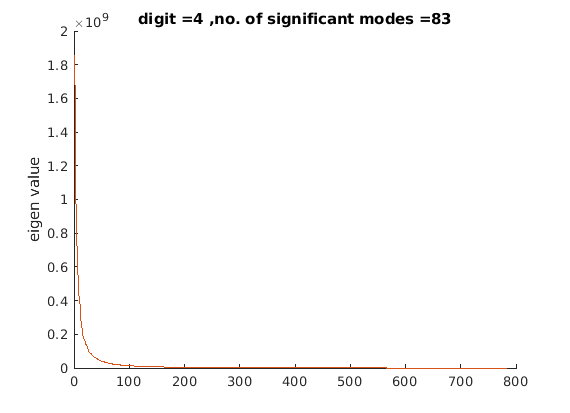 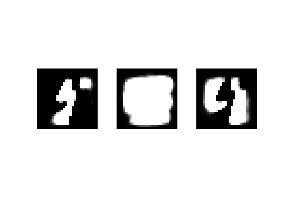 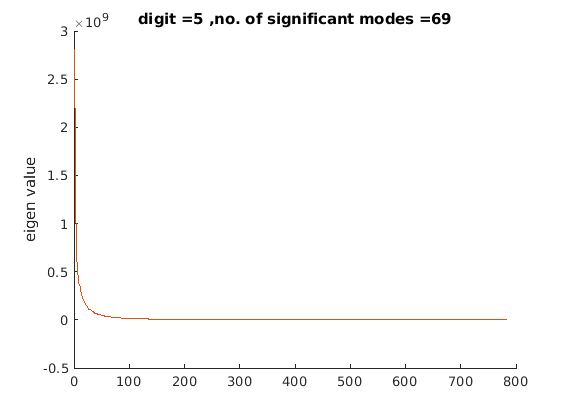
 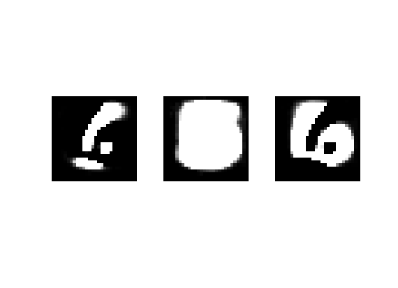 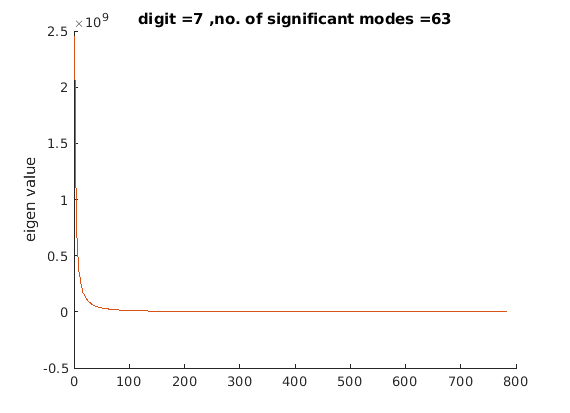 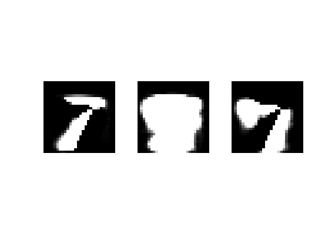 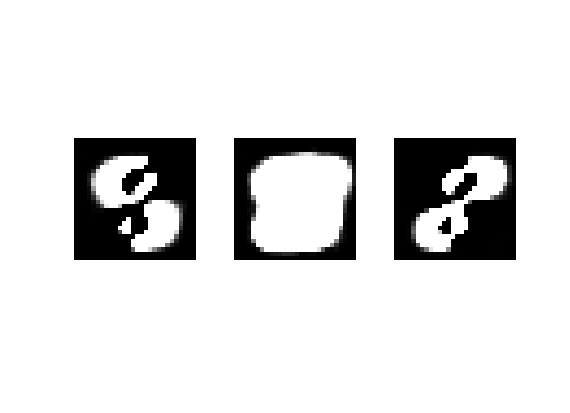 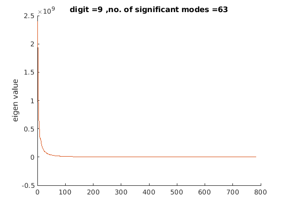 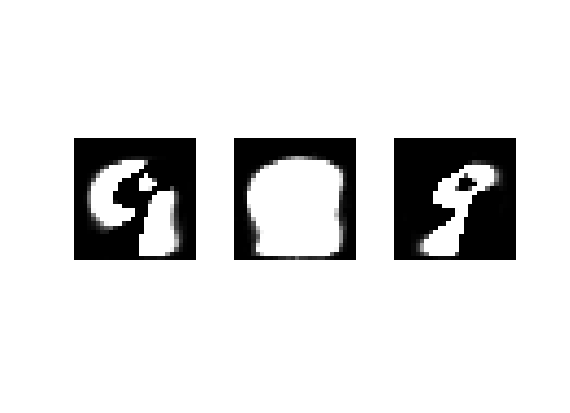
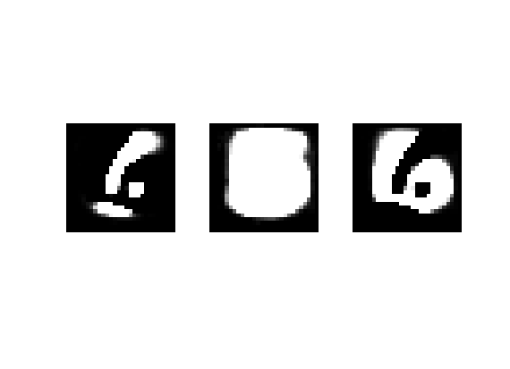 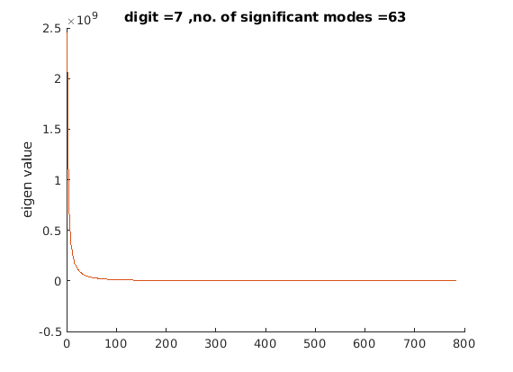 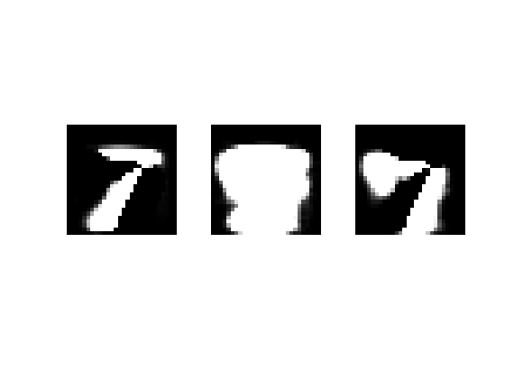 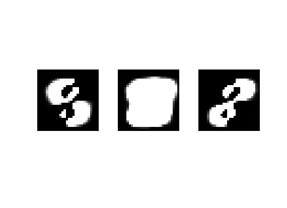 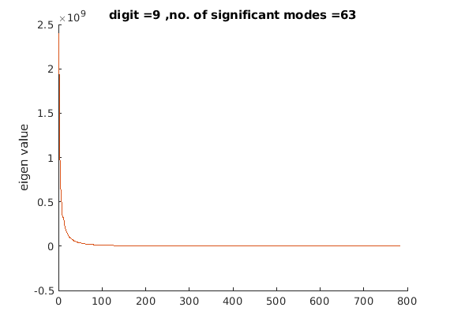 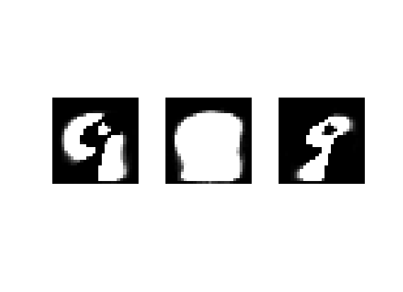